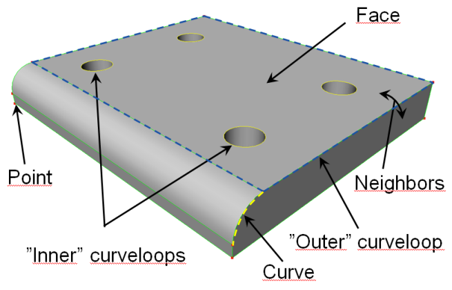

vcTopologyPickCommand provides options for handling the selection and creation of points, lines and curves using the interactiveTopologyPick command.
Inherits: vcCommand

Contents Hide
| Name | Type | Access | Description |
| ContinuousMode | Boolean | RW | Turns on/off the use of continuous curve selection in 3D world. |
| SnapOnCurve | Boolean | RW | Turns on/off the ability to select a curve. |
| SnapOnCurveLoop | Boolean | RW | Turns on/off the ability to select a curve loop. |
| SnapOnSurface | Boolean | RW | Turns on/off the ability to select a point on a face. |
| TargetAvailable | Boolean | R | Indicates if pointing at a valid target. |
| TargetCurveAvailable | Boolean | R | Indicates if pointing at an available curve. |
| TargetCurveIndex | Integer | R | Gets the index of an available curve. |
| TargetCurveLoopAvailable | Boolean | R | Indicates if pointing at an available curve loop. |
| TargetCurveLoopIndex | Integer | R | Gets the index of an available curve loop. |
| TargetCurves | List of (vcNode, vcGeometrySet, Integer curveIndex, Boolean curve_direction) | R | Gets a list of curve data for target. |
| TargetGeoset | vcGeometrySet | R | Gets geometry set of a target. |
| TargetLocked | Boolean | R | Indicates if target has been selected in 3D world. |
| TargetNode | vcNode | R | Gets the node containing target. |
| TargetNormal | vcVector | R | If available, gets surface normal of target. |
| TargetNormalAvailable | Boolean | R | Indicates if surface normal is available for target. |
| TargetPosition | vcVector | R | Gets the position vector of target in World coordinate system. |
| TargetSurfaceAvailable | Boolean | R | Indicates if pointing at an available point on surface. |
| TargetSurfaceIndex | Integer | R | Gets the index of an available surface. |
| Name | Parameters | Description |
| OnTargetAvailable | vcTopologyPickCommand command | Triggered when pointing at an available target.
The command itself is passed as an event argument, thereby providing access to updated property values. |
| OnTargetSet | vcTopologyPickCommand command | Triggered when a valid target has been selected in 3D world.
The command itself is passed as an event argument, thereby providing access to updated property values. |
Example. Implement command and continuous selection
| from vcScript import *
app = getApplication() cmd = app.findCommand('interactiveTopologyPick') cmd.ContinousMode = True cmd.execute() |